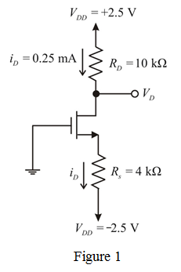

Refer to Figure 5.21 in the textbook.
Calculate the value of resistance .
.
Thus, the resistance is.
is.
Refer to Figure 5.21 in the textbook.
Calculate the value of resistance.
Thus, the resistance is.
Calculate the value of gate to source voltage .
.
Substitute  for
for  , for , for
, for , for  , for
, for  , and for
, and for  in the equation.
in the equation.


From the circuit, the voltage  is,
is,
Thus, the resistance  is.
is.
Thus, the required circuit is designed and is shown in Figure 1.
